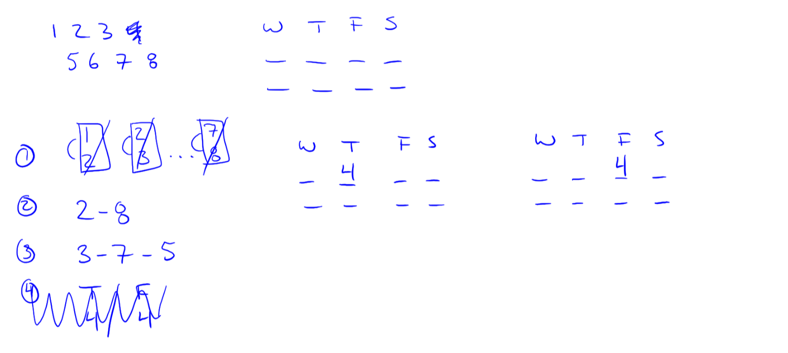
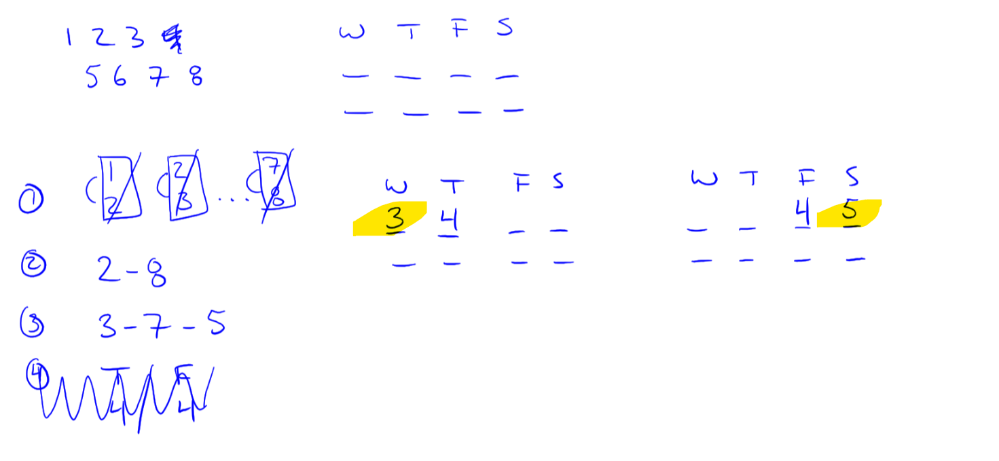
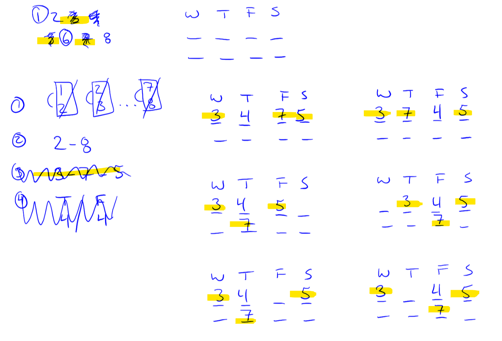
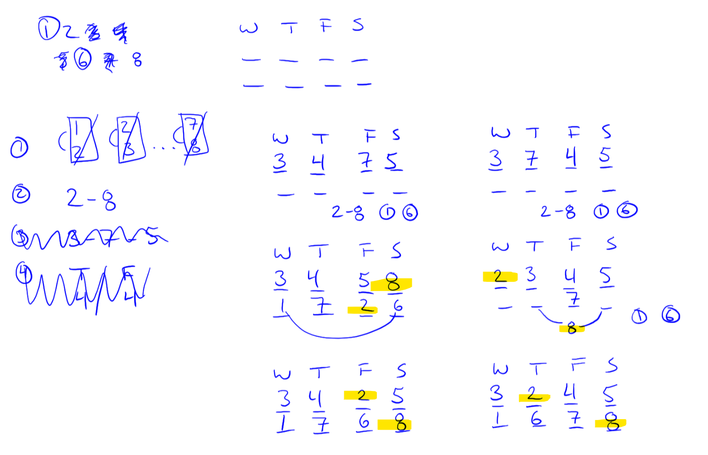

I think this is close to how I diagrammed it on the test day. I haven’t tried any alternative diagrams or splitting choices and I don’t claim this is a great way to do this, but it worked for me.
I represented this as a sequencing game with two spots per day. It looks like a 2-layer sequencing game, but there is no significance to the order of items on a particular day. They are interchangable.
I first split the game board based on the rule that 4 has to go on Thursday or Friday.

Three things come together next to severely shrink the number of possible worlds. We have the 3–7–5 sequence. We have two game boards: one with a 4 on a Thursday and one with 4 on a Friday. We know that 3/4 can’t go together and 4/5 can’t go together.
When 4 is on a Thursday, 3 is forced onto Wednesday. When 4 is on a Friday, 5 is forced onto Saturday.

Next, I split each of these worlds into three subworlds, for the three possible arrangements of the remaining two elements of the 3–7–5 sequence.

Several of these game boards severely restrict the placement of the 2–8 sequence, given that 2 cannot go on the same day as 3.

That was my diagram when I went into the questions.